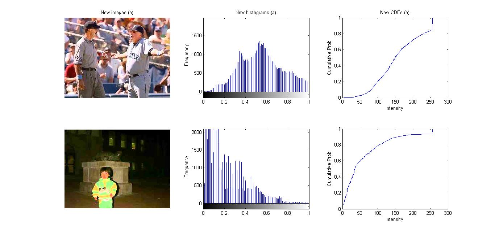
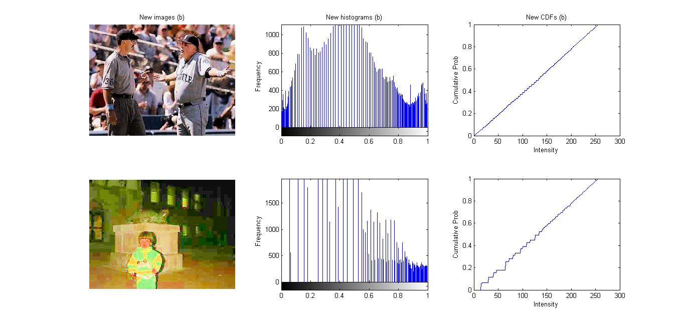

Yi-Ting Tsai
My Project Portfolio
Digital Signal & Image Processing Projects
Advanced Driver Assistance Systems Image Analysis :
Associated Course: Electrical Engineering Entrepreneurial Capstone
Industrial Sponsor: Daimler Trucks North America
Key Words: Computer Vision, Object Detection, Inverse Perspective Mapping, Projective Transformation, Advanced Driver Assistance Systems (ADAS), CAN Bus, Image Processing, Image Filtering, Machine Learning, Deep Learning, Single Shot MultiBox Detector (SSD), TensorFlow, OpenCV, Python, Linux enviornment, GPU, Project Management
Description: Daimler Trucks North America (DTNA) uses radar systems to monitor the right-side blindspot on their trucks in order to give warnings to the driver about moving objects present. Currently, one of such systems can indicate to the driver that an object is in the blindspot when nothing is actually present. One known example is that the radar system can detect the truck’s trailer and send warnings about it, even though the truck will not hit its own trailer. The only way to detect these false warnings is to manually search through the camera footage of this blindspot and find them at random. This process is very time-consuming, but is necessary if the radar system is to be evaluated and improved.
The work in our project aims to create a program that uses image analysis techniques to automatically find false warnings from thousands of data packages. It will save a lot of effort that was previously used to evaluate the radar system manually. To find false warnings, we developed our own object detector using deep learning. By comparing the results of our image analysis program and the radar system data from the trucks' Controller Area Network (CAN) busses, our system generates reports indicating when and where these instances of false warnings occurred for Daimler’s engineers to analyze and improve their radar system.
(1) High-level system block diagram
The project was done by a team of three. As the Project Manager/Image Analysis Engineer, my personal achievements are as follows:
- Trained a Single Shot MultiBox Detector (SSD) model for vehicle detection using TensorFlow and Python
- Collected, organized, and labelled image data for training
- Expanded the training data set by generating new image data from available data using image augmentation
- Implemented an algorithm that estimates the real-world coordinates of detected vehicles relative to the truck using inverse pespective mapping through OpenCV
- Created detailed timelines to clarify every team member's responsibility and schedule
- Communicated between the team, Daimler, and the UW faculty to ensure that the project was on track to achieve milestones
- Researched on various image analysis techniques and provided guidance to teammates on how we could realistically use them
For reference below is a sample video showing the image outpus of our image analysis program. Our image anlysis program also outputs timestamps and detection information (detected objects and their coordinates) into a CSV file for comparison with the radar system outputs.
Real-time Musical Instrument Conversion :
Associated Course: Design and Application of Digital Signal Processing
Key Words: Digital Signal Processing (DSP), Real-time System, Pitch Deteciton, Tone Deteciton, Music Synthesis, Digital Sound Signal, Audio Signal Framing, Power Spectral Density (PSD), Discrete Fourier Transform (DFT), Fast Fourier Transform (FFT), Frequency Modulation, Low-pass Filter, Embedded Systems, Circular Buffer, Digital Signal Processor, TI C6748 DSP Development Kit (LCDK), C, Matlab GUI, UART
Description: In this project, we implemented a real-time system that detects the tones of input audio signals and synthesizes the tones into musical instrument sounds of the user’s choice (out of available options) in a TI C6748 DSP Development Kit with C. For example, our system will recognize the music notes from the input and output a new version as if played by a plucked string instrument or a woodwind instrument. In addition, through UART, tone detection results will be displayed in a Matlab GUI in real time. Based on the project deliverables, this project was divided into the following three main sections: frequency detection, instrument synthesis, and user interface.
Our frequency detection algorithm used the classic Power Spectral Density Method. However, we added some steps to increase its performance. For example, the issue of low frequency resolution when applying FFT to signal frames was solved by using the Weighted Averge Estimation method to get a more precise detected frequency index. Some conditional statements were used to overcome the issue of overtones in instruments like piano too.
For musical instrument sound synthesis, we decided to synthesize the following three instruments: bells, clarinet, and banjo-guitar. The first two were done by frequnecy modulation. The last one was achieved by the Karplus-Strong Algorithm.
For the user interface, firstly, the user controls the input to the LCDK through Line-in. User can choose to play a pre-recorded song or generate tones through an online piano and send the results to the LCDK in real time. Secondly, the user can change the synthesized instrument by changing the switches on the LCDK. Finally, tone detection results will be displayed in a Matlab GUI.
(1) Testing our system
Below is a demo video. At first the original input music was played (the laptop on the left). Next, we tried to convert the input music into clarinet sounds in real time, then into banjo-guitar sounds (the laptop on the right). At last, we tried to convert input sounds from a virtual piano into sounds of all of the three musical instruments we had.
Transition Detection and Reconstruction of Signals Corrupted by Additive White Gaussian Noise :
Associated Course: Random Signals for Communications and Signal Processing
Keys Words: Digital Signal Processing, Matlab, Signal Filtering, Signal Reconstruction, AWGN Reduction, FIR Moving Average Filter, IIR One-Pole Autoregressive Filter, Matched Filter, Template Matching
Description: In this project, I successfully reconstructed signal x from a received noisy signal r = x + σw in Matlab, given
1)
the original signal x consists of about L = 20 segments, and each segment is a constant slope (1 or -1) of random duration
2) σw is
Additive White Gaussian Noise (AWGN) of zero mean and unit variance, scaled by a factor σ.
Deriving x requires us to extract a smooth curve out of r. In order to get the curve, the first step we did was to reduce AWGN by applying a low-pass filter. After trying both a Moving Average (FIR) Filter and an one-pole Autoregressive (IIR) Filter, we found that there is always a trade-off between signal stability (the output is unstable) and dynamics accuracy (the output is delayed).
(1) Low-pass filter results
However, observations drawn from numerous simulations with different filter coefficients showed that in the moving average filter’s case, the delay time is constant and can be approximated by half of the filter’s averaging size. After shifting the filtered result to the left, we derived a moderately stablized curve.
(2) The shifted moving average filter output compared with the original signal x we want to reconstruct
Yet the filtered signal was still too noisy. After observing the failure of using a low-pass filter alone, we proposed that instead of simply looking at the filter outputs, we can use them to detect transition points first. A matched filter was used to do so. After getting a moderately stabilized curve from the low-pass filter, by matching the curve with a corner template, we can get a perfectly smooth curve whose transition points can be derived from the Matlab findpeaks() function directly.
These transition points are critical to reconstructing a signal composed of linear segments. By creating linear equations based on the information of slopes we know and the positions of the signals’ local maxima and minima we found, we successfully reconstructed signal x from the noisy signal r.
(3) Matched filtered result - transition points (local extrema) can now be detected easily (4) The reconstructed signal
Image Artistic Stylization – Watercolor Effect:
Associated Course: Digital Imaging Systems
Keys Words: Digital Image Processing, Matlab, Image Filtering, Morphological Operations, GUI
Description: In this project, I implemented a simple graphic user interface (GUI) that can load an image and apply watercolor effects on it in Matlab. After using a median filter to reduce noise, by performing closing and then opening with different sizes of structuring elements on the target image (which were done by erosion, dilation, another dilation, and then another erosion), I was able to generate the effects.

(1) Example of using the interface (small brush size)
(2) Example of using the interface (large brush size)
Histogram-based Image Enhancement:
Associated Course: Digital Imaging Systems
Keys Words: Image Enhancement, Matlab, Histogram Equalization, Histogram Specification, Linear Stretching, RGB, HSV
Description: In this project, I implemented my own functions for linear stretching, histogram equalization and specification in Matlab. After changing RGB images to HSV, by stretching the distributions of them, equalizing the histograms of them, or matching them to another image (distribution), I was able to adjust and enhance their intensities in different ways.
(1) The original images (each column shows: image, histogram of image intensity levels, cdf of image intensity levels) (2) After using linear stretching
(3) After using histogram equalization (4) After using histogram specification with a self-defined normal distribution
Elementary Music Synthesis:
Associated Course: Discrete-Time Linear Systems
Keys Words: Digital Sound Signal, Matlab, Sampling, Time Shifting, Scaling
Description: In this project, using tones of various frequencies created from sine functions, we composed a segment of music consisted of whole, half,
and fourth notes from the Scarborough Fair song in Matlab. We also improved the quality of the piece of music via two techniques:
1) Applying the ADSR (Attack, Decay,
Sustain, and Release) model and
2) allowing the notes to overlap each other slightly.
(1) Graph of Magnitude of each note in the song (2) The ADSR model we used (3) The reconstructed sound signal after the implementation of our ADSR (4) The final signal with overlapped notes
The original synthesized musical notes & The improved version
Digital Filtering and Music Equalizer:
Associated Course: Discrete-Time Linear Systems
Keys Words: Digital Sound Signal, Matlab, Digital Filtering, Difference Equation, Convolution
Description: In this project, we implemented different types of digital filters in Matlab and looked at their characterization in different domains to gain insight into their properties. After that, we designed a music equalizer using a low-pass filter, a band-pass filter, and a high-pass filter.
We implemented a 30-day moving average (low-pass) filter to a text file containing Microsoft stock price over 4 years to get the long-term
(30 days as a unit instead of 1 day) trends of the stock price
1) using the difference equation y[n]=1/30( x[n] + x[n-1] + … x[n-29] ) and the
Matlab "y=filter(b,a,x)" function
2) by performing convolution between the stock price data and the impulse response h[n]= 1/30(u[n] – u[n-30])
3) using a FIR filter of order 10 with cutoff frequency of 0.3pi created by Matlab function "fir1"
4) using a low pass IIR filter with the same order and
frequency created by Matlab function "butterworth".
(1) The original stock price graph and the filtered result using method 2 (2) The filtered results with methods 3 and 4
After that, we built a three-band equalizer by writing a function "equalizer" that takes gain terms G1, G2, G3 and the original signal x as inputs and returns the equalized signal as the output. The three filters (low-pass, high-pass, band-pass) were created with the Matlab "y=filter(b,a,x)" function.
(3) Diagram for the three-channel equalizer (4) Filtered result of each channel with a piece of music (G1=G2=G3=1)
Filtered music with G1=1, G2=G3=0 & Filtered music with G2=G3=1, G1=0
Decoding Phone Numbers:
Associated Course: Continuous-Time Linear Systems
Keys Words: Touch-tone Signal, Matlab, Correlation, Frequency Domain, Fourier Transform
Description: In this project, we used "fft" and "fftshift" functions in Matlab to perform Fourier Transforms on touch-tone signals to get the frequency(w) content in them. After comparing the total errors between the derived frequencies and the DTMF keypad frequencies, we can then classify the number representations of these touch-tone signals by finding the corresponding number that results in the minimum error (highest correlation). With these methods, we were then able to write a function that was applied to decode a phone number.
(1) Example of getting the frequency content of a signal (2) Applying our function to a touch-tone signal (3) The decoded numbers
Hashing for Painting Comparison:
Associated Course: Data Structures and Algorithms
Keys Words: Java, Hash Table, Data Structure, Linear Probing, Quadratic Probing, Feature Vector, Cosine Similarity, Color Space, Image Comparison
Description: In this project, I implemented a hash table in Java and used it to measure the similarity of color tones between two input images.
To do so, firstly, I implemented a hash table whose dictionary entry is a pair, with a "ColorKey" as the key, and a nonnegative integer (a count) as the value. It has two collision-resolution policies: linear probing and quadratic probing. In the hash table, each ColorKey correponds to a color space (here we consider color spaces instead of simply colors because colors that look the same from human eyes are usually distinct to computers). Secondly, I scanned the two images to be compared pixel by pixel. During the process, I created two new hash tables and filled them by counting the number of pixels of each color space in each image. Thirdly, I extracted two feature vectors from the two filled hash tables (each feature vector describes how much of each color space is used in its corresponding image). Finally, by using cosine similarity, I was able to get a similarity value between the uses of colors in the two input images.
(1) Cosine Similarity Formula
(2)(3) Example Results: Similarity of Two Images = 0.95557
(4)(5) Example Results: Similarity of Two Images = 0.15188
(Image sources: 16411-presscdn-0-65.pagely.netdna-cdn.com, cdn3.bigcommerce.com, webneel.com)
Labeling the Connected Components of an Image:
Associated Course: Data Structures and Algorithms
Keys Words: Java, Union-Find, Data Structure, Connected Components, Strict Pixel Graph, Image Processing, Binary Image
Description: In this project, I used the Union-Find method to build a forest of up-trees for an input binary image and successfully labeled all the connected components in it.
The following steps were taken:
(1) Turn the given binary image into a strict pixel graph G = (V, E), where V is the set of pixels, and E is
the set of undirected edges, as E connects v0 = (x0, y0) with v1 = (x1, y1), given | x0 - x1 | + | y0 - y1 | = 1 and the colors of the two
pixels are equal.
(2) Assign each pixel a pixel ID (in order) and a -1 parent ID.
(3) Implement Find, which returns a given pixel's parent ID; and Union,
which takes two pixel ID values and makes the one having the smaller pixel ID value be the parent of the other.
(4) Scan all the pixel pairs for which edges
exist and perform Find-Union on all such pairs to build up each up-tree that represents each connected component.
(5) Find the root of each pixel's up-tree
and replace pixels whose parent ID = root's pixel ID with a new RGB color.
(1) The Labeled Image and (2) the Original Image (Gettysburg Address)